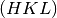
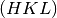

TransformHKL dialog.
Table of Contents
Specify a 3x3 matrix to apply to (HKL) vectors as a list of 9 comma separated numbers. Both the UB and HKL values will be updated
| Name | Direction | Type | Default | Description |
|---|---|---|---|---|
| PeaksWorkspace | InOut | PeaksWorkspace | Mandatory | Input Peaks Workspace |
| Tolerance | Input | number | 0.15 | Indexing Tolerance (0.15) |
| HKLTransform | Input | dbl list | 1,0,0,0,1,0,0,0,1 | Specify 3x3 HKL transform matrix as a comma separated list of 9 numbers |
| NumIndexed | Output | number | Gets set with the number of indexed peaks. | |
| AverageError | Output | number | Gets set with the average HKL indexing error. |
Given a PeaksWorkspace with a UB matrix stored with
the sample, this algorithm will accept a 3x3 transformation matrix  ,
change
,
change  to
to  and map each  vector to
and map each  vector to  .
For example, the transformation with elements 0,1,0,1,0,0,0,0,-1 will
interchange the
.
For example, the transformation with elements 0,1,0,1,0,0,0,0,-1 will
interchange the  and
and  values and negate
values and negate  .
This algorithm should allow
the usr to perform any required transformation of the Miller indices,
provided that transformation has a positive determinant. If a transformation
with a negative or zero determinant is entered, the algorithm with throw an
exception. The 9 elements of the transformation must be specified as a
comma separated list of numbers.
.
This algorithm should allow
the usr to perform any required transformation of the Miller indices,
provided that transformation has a positive determinant. If a transformation
with a negative or zero determinant is entered, the algorithm with throw an
exception. The 9 elements of the transformation must be specified as a
comma separated list of numbers.
Example:
ws=LoadIsawPeaks("TOPAZ_3007.peaks")
FindUBUsingFFT(ws,MinD=8.0,MaxD=13.0)
print("Before Transformation:")
print(ws.sample().getOrientedLattice().getUB())
#This HKLTransform is a matrix that will swap H and K and negate L
TransformHKL(ws,HKLTransform="0,1,0,1,0,0,0,0,-1")
print("\nAfter Transformation:")
print(ws.sample().getOrientedLattice().getUB())
Output:
Before Transformation:
[[ 0.01223576 0.00480107 0.08604016]
[-0.11654506 0.00178069 -0.00458823]
[-0.02737294 -0.08973552 -0.02525994]]
After Transformation:
[[ 0.00480107 0.01223576 -0.08604016]
[ 0.00178069 -0.11654506 0.00458823]
[-0.08973552 -0.02737294 0.02525994]]
Categories: AlgorithmIndex | Crystal\Peaks
C++ header: TransformHKL.h (last modified: 2018-10-05)
C++ source: TransformHKL.cpp (last modified: 2019-11-28)